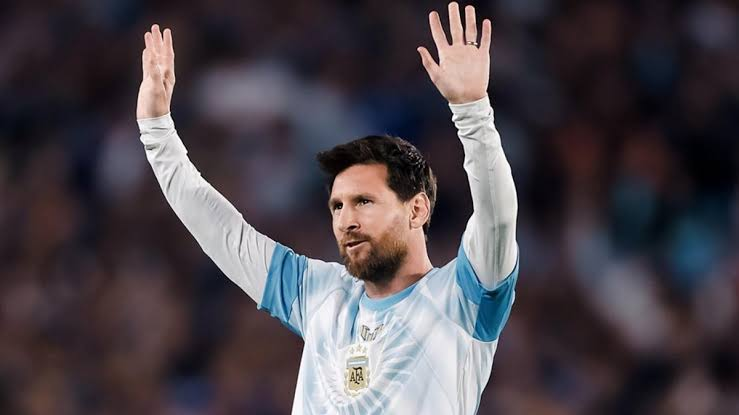
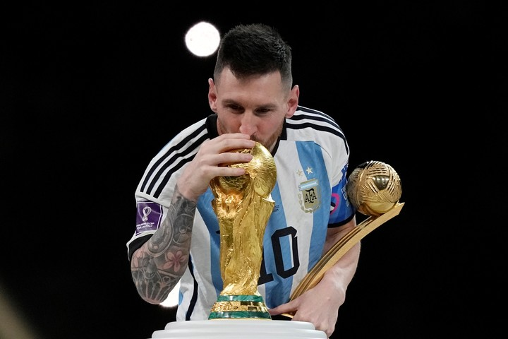

Biografía

Lionel Andrés Messi nació el 24 de junio de 1987 en Rosario, provincia de Santa Fe, Argentina. Es ampliamente considerado como uno de los mejores futbolistas de todos los tiempos gracias a su extraordinaria habilidad técnica, visión de juego y capacidad goleadora.
Desde temprana edad mostró un talento descomunal en las divisiones infantiles de Newell's Old Boys, antes de trasladarse a Barcelona a los 13 años para continuar su desarrollo deportivo y recibir tratamiento médico.
Trayectoria deportiva
A lo largo de su carrera profesional, defendió las camisetas del FC Barcelona, París Saint-Germain y el Inter Miami CF de la Major League Soccer, además de capitanear y consagrarse campeón del mundo con la Selección Argentina en Qatar 2022.
Logros y distinciones

Entre los títulos y reconocimientos más destacados conseguidos a lo largo de su carrera se encuentran:
- Copa Mundial de la FIFA en Qatar 2022
- 8 Balones de Oro otorgados por France Football
- 4 Ligas de Campeones de la UEFA con el FC Barcelona
- 2 Copas América con la Selección Argentina (2021 y 2024)
- 6 Botas de Oro como máximo goleador europeo
Enlaces de interés
Para conocer más sobre sus estadísticas oficiales y trayectoria, puedes visitar el sitio oficial de la Asociación del Fútbol Argentino: